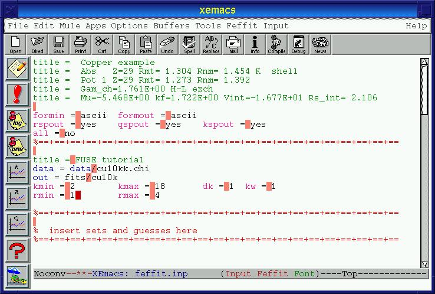

FEFFIT is the program covered by @fuse{} which has the most complicated input files. Consequently, the most interesting and powerful features of @fuse{} are designed explicitly for the FEFFIT input file.
Before starting in on creating the input file for FEFFIT, I want to define an important term -- the path paragraph. In FEFFIT each scattering path is described by one or more path parameters. The path parameters are a set of keyword that tell FEFFIT how to calculate the contribution from a given scattering path. They have a common syntax. Each path parameter must be on its own line and the parameter itself must be the first word on the line. The second word on the line is an integer index identifying the path. The rest of the line is devoted to the value of the parameter. In FEFFIT there are no further syntactic requirements(4). Specifically, they can appear in any order in the input file and FEFFIT will happily process them.
@fuse{} adds an additional syntax requirement to the FEFFIT input
file. @fuse{} requires that all path parameters used to describe a given
scattering path be contiguous in the file and that the path (or
feff, they are synonyms) path parameter be the first first listed
in the contiguous group. These groupings of path parameetrs are
separated by one or more lines containing only white space or comment
characters. White space in FEFFIT is defined as spaces or tabs and
comment characters are any of %, !, #, or (at the
beginning of a line) *. This grouping beginning with the
path path parameter and ending with a line of white space or
comment characters is called a path paragraph. @fuse{} has
numerous functions for operating on path paragraphs. If you prefer to
organize your input file by parameters rather than by paragraphs, the
you will probably not find @fuse{} very helpful.
Writing a new input file for FEFFIT can be very tedious, time consuming, and error prone. To my mind, a task that is as inherently repititious as constructing a brand new FEFFIT input file begs for automation. @fuse{} to the rescue.
Start by creating a new file. Use C-x f to tell Emacs to create
a new file. When it asks for the file name, answer with
`feffit.inp'. Note that the mode line now reads Feffit and
there is a Feffit menu in the menu bar. The first thing you need
to do is set the paths to the data, FEFF, and output files by
hitting C-c C-d a or selecting >> Set all three paths from
the Input - Set variables menu. Set them to `data/',
`feff/', and `fits/' resprectively.
Don't skip this step! Correctly
setting these file paths will save you an enormous amount of
typing in a few minutes.
Now type C-c C-f f or select files.dat from the
Feffit - Examine output from Feff menu. This will display
`files.dat', one of the output files from the FEFF run.
Notice that this file actually bears a resemblence to a
`feffit.inp' file. It contains a list of the file names that are
needed as the values of the path path parameters and it shows
some relevant information about each of those path files. Now type
M-C-` to return to the `feffit.inp' file.
Now comes some wizardry. Type C-c C-t f or select Make
feffit.inp from files.dat from the Feffit - Templates menu.
(You can also hit the templates icon in the toolbar, but the behavior of
that button may not make sense to you yet.) You will be asked in the
minibuffer for the name of the `files.dat' file. The initial guess
will be correct since you set the path to the FEFF files. Just hit
ret. @fuse{} will display the contents of `files.dat' file
and ask you a slightly cryptic question about the minimum
amplitude. Just hit ! and ret. After working for a few
second, the `files.dat' file is transformed into a skeleton for a
FEFFIT input file. Wow!
The first several lines are title lines containing the header
information from the `files.dat' file. Then templates for global
and local variables were inserted into the input file. Note that the
hotspot markers have been placed in the templates. The remaining lines
are path paragraphs formed from the lines in `files.dat'. Note
that the path to the `feffnnnn.dat' files was inserted in each path
paragraph. The small chore of setting that path a few minutes ago has
saved you a huge amount of dull typing. Yay! You actually have some
control over how many lines from `files.dat' are written out as
path paragraphs. The minimum amplitude question was giving you the
option of discarding small paths by specifying an amplitude cutoff.
Other questions would have given you options to discard paths beyond a
certain length or containing too many legs. By hitting !, you
told @fuse{} to use defaults for these three cutoffs, that is not to
discard any files. Later on, you may want to play with this function to
see how these filters behave.
Now fill out the header templates so that they look like Figure 8.
Figure 8: The headers of the FEFFIT input file

Copper metal is a fairly simple fitting problem. It is cubic, so all of
the changes bond lengths can be parameterized in terms of a volume
lattice expansion constant, @greekletter{alpha}. A single Debye
temperature, @thetad{}, will be a good enough approximation for the
@sigsqr{} values. We will also need an @ezero{} and @amp{}. Delete the
line that says % insert sets and guesses here and type in the
following
guess amp 0.9 guess e0 0.0 guess thetad 300 guess alpha 0.0
There are two ways we could procede from here. Using the fitting model
I described in the last paragraph, it would suffice to set the
s02, e0, delr, and sigma2 path parameters as
parameters in a zeroth path paragraph. Alternatively, we could
explicitly set each of those parameters in each paragraph. Since this is
a tutorial, let's do two of them as zeroth path parameters and two of
them in each paragraph.
Type C-c C-t z or select Zeroth path template from the
Feffit - templates menu. Fill this template in with the
appropriate guessed parameters. It should look like this:
s02 0 amp e0 0 e0
This will set make the best fit values of the variables
amp and e0 the @amp{} and @ezero{} values for each path.
Now we need to add delr and sigma2 path parameters in each
path. @fuse{} provides an elegant shortcut for this onerous editing
task. Hit C-c C-v a or select Add parameter to all
paragraphs from the Feffit - Paragraph manipulation menu. When
asked `Which parameter?', answer with `delr'. Then when asked
`Default value for delr?', answer with `alpha*reff'. This
information is filled into every paragraph with the correct indexing.
Now execute that function again again, this time answering the questions
with `sigma2' and `debye(temp, thetad)'. Beats editing by
hand!
We are almost done. The debye function require the sample
temperature. For the data in this tutorial the temperature is 10 K, so
put
set temp 10
after the guess parameters. To get the correct temperature
dependence of the @sigsqr{} terms it is necessary to consider the
so-called McMaster correction which is necessary since @greek{chi,k} was
normalized to the edge step in AUTOBK. Hit C-c C-s m or
select Insert McMaster corrections from the Feffit menu.
Answer yes to the question about setting sigmm. This function
reads the value for the McMaster @sigsqr{} correction from the
`feff.inp' file and inserts its value in the `feffit.inp'
file. It also adds this to the @sigsqr{} for each path.
When you are finished, each path paragraph will look like rather like this
path 1 feff/feff0001.dat id 1 amp=100.000, deg=12.000, nleg=2, r_eff=2.5527 delr 1 alpha*reff sigma2 1 debye(temp, thetad) + sigmm
There should be 25 paragraphs. Now save the input file and run FEFFIT.
You can plot the results of the fit in k-space, R-space, or back-transformed k-space using C-c C-p k, C-c C-p r, and C-c C-p q, respectively. There are toolbar icons and menu entries for each of these plot options as well. You can examine the log and prm files using C-c C-f l and C-c C-f r.
@fuse{} has a convenient mechanism for updating the guess parameters with their best fit values. Move the screen cursor to the line containing one of the guesses and hit C-c C-s g. @fuse{} fetches the best fit value and the error bar from the log file and replaces the initial guess. C-c C-s b replaces all of the initial guesses in the file with their best fit values from the log file.
Go to the first, previous, next, last section, table of contents.